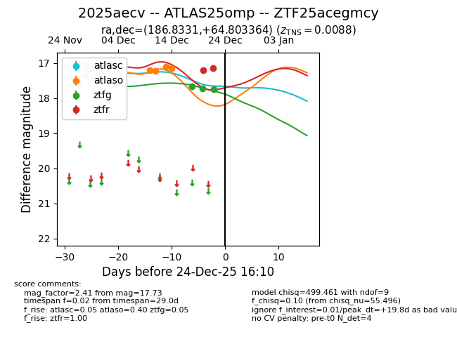
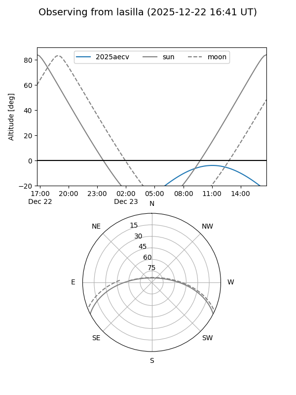
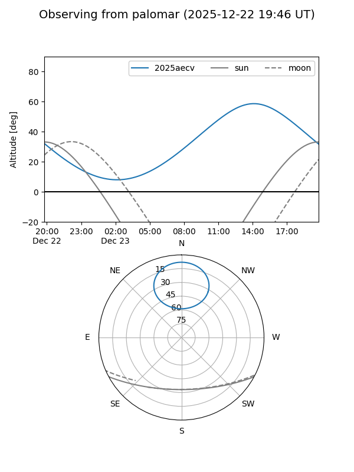
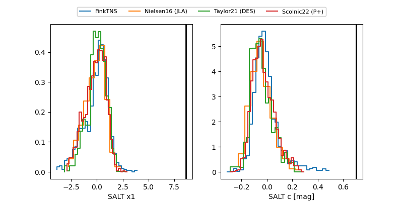

2025aecv
Target 2025aecv at 2025-12-24 16:17
Aliases and brokers:
FINK: fink-portal.org/ZTF25acegmcy
Lasair: lasair-ztf.lsst.ac.uk/objects/ZTF25acegmcy
ALeRCE: alerce.online/object/ZTF25acegmcy
TNS: wis-tns.org/object/2025aecv
YSE: ziggy.ucolick.org/yse/transient_detail/2025aecv
alt names
ZTF25acegmcy (ztf,fink_ztf)
2025aecv (tns,yse)
ATLAS25omp (atlas)
Coordinates:
equatorial (ra, dec) = 186.8331,+64.80336
equatorial (HMS+DMS) = 12:27:19.94,+64:48:12.11
galactic (l, b) = (127.1072,+52.12903)
Flags:
Photometry:
last atlasc=17.35, atlaso=17.15, ztfg=17.73, ztfr=17.15
2 atlasc, 6 atlaso, 3 ztfg, 2 ztfr detections
Lightcurve

Visibility


Additional plots
